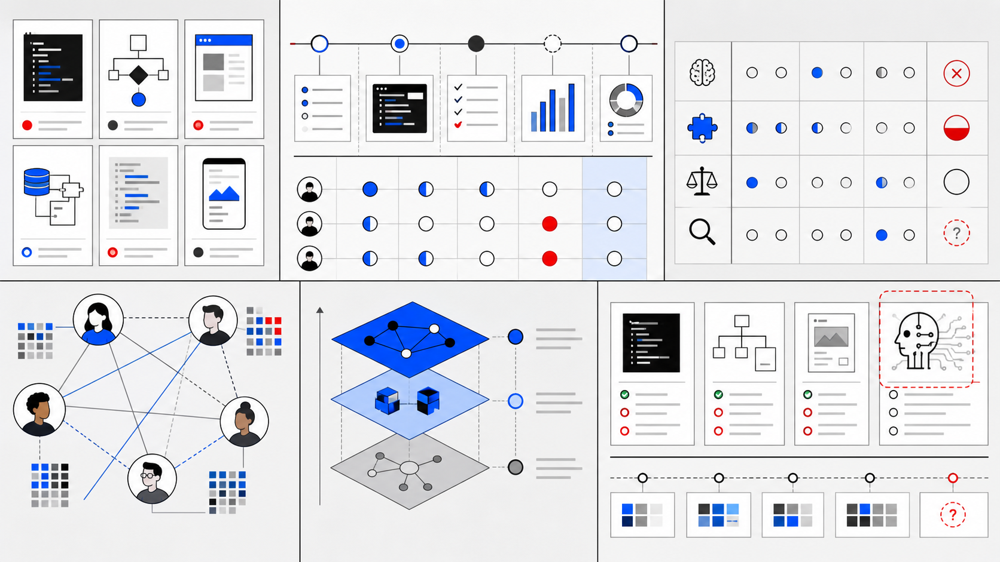

Purpose of FORAP
FORAP is motivated by three recurring imperatives in computing PjBL: the instructor workload required to adopt, adapt, implement, and sustain projects, the technical barriers students face during project work, and the need for stronger formative and summative assessment of higher-order thinking in project-based learning.
Instructor Imperative
- Substantial instructor workload in adopting, implementing, and sustaining PjBL projects
- Effort required to design new projects or adapt existing projects to a course context
- Difficulty aligning projects with course objectives and learning goals
- Persistent challenges in project scoping, organization, and management of the learning process
- Time required to plan student support and prepare assessment for open-ended outcomes
Student Imperative
- Recurring installation and configuration challenges with required tools
- Gaps in prerequisite knowledge needed to begin and continue project work
- Technical challenges during debugging, implementation, testing, deployment, version control, and documentation
- Frustration and reduced motivation when technical barriers feel insurmountable
- Increased need for timely support in large classes and across diverse student backgrounds

Assessment Imperative
- Difficulty assessing higher-order thinking skills such as analysis, synthesis, and evaluation
- Limitations of relying mainly on final project artifacts as evidence of learning
- Need for formative assessment that makes student progress visible during project work
- Difficulty assessing individual contribution and mastery in collaborative PjBL settings
- Generative AI use can obscure students' true learning and independent understanding